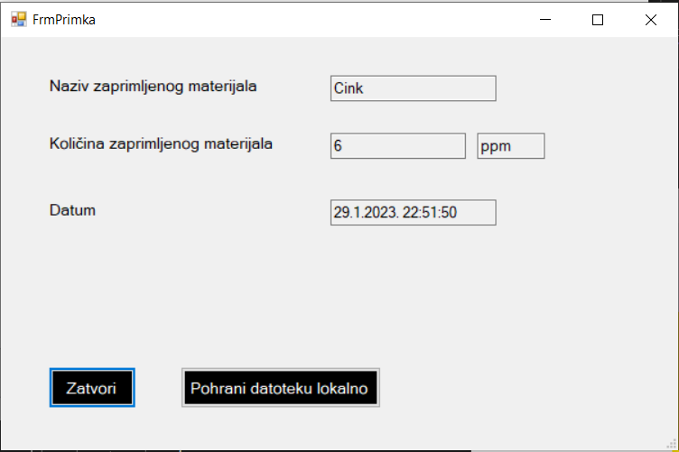

Kada se klikne gumb Ažuriraj količinu generira se dokument Primka čiji se sadržaj ispisuje na ekran pomoću tekstualnih okvira koji se ne mogu modificirati. Postoji i mogućnost da korisnik lokalno spremi taj dokument primku tako što klikne gumb Pohrani datoteku lokalno. Zadnja mogućnost je mogućnost zatvaranja forme koja se ostvaruje klikom na gumb Zatvori.
